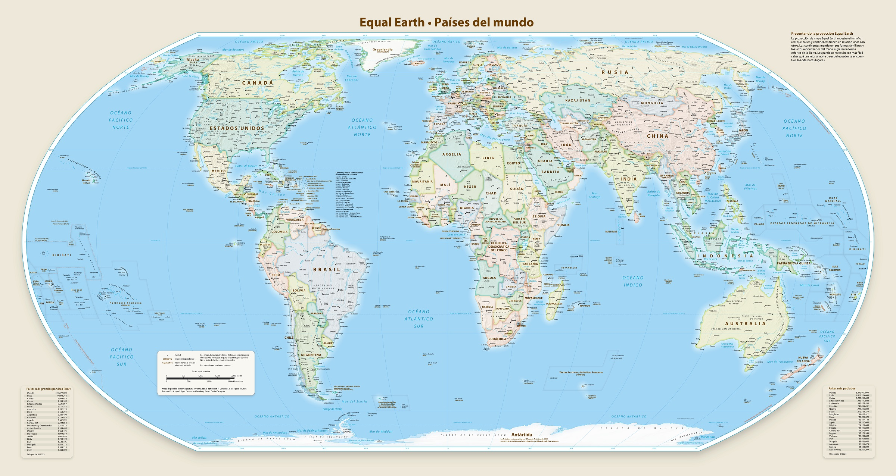

Un atlas de la historia geológica
Historia de la Tierra
Un recorrido por la formación de nuestro planeta y las transformaciones que dieron forma a sus continentes, desde la Tierra primitiva hasta el mundo que conocemos hoy.

Sigue la transformación del planeta a través del tiempo.
Comenzar el recorrido